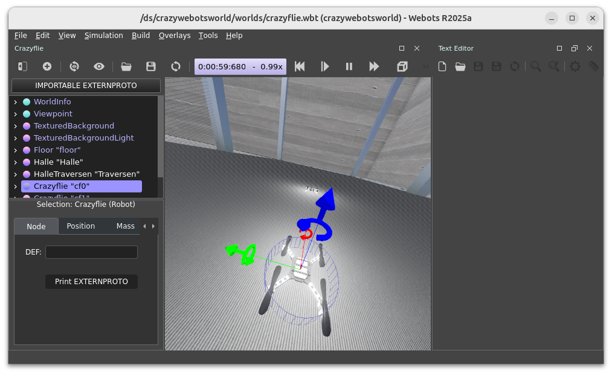

ds-crazyflie: Webots Simulation
(This is a compilation of the most important features taken from the Usage Guide.)

Installation
On your host system move into the root folder of the cps.asset.crazyflie GitHub project and execute the following commands:
$ cd ~/uniagent_ws/cps-asset/crazyflie2.x/simulation/ds-crazyflies-ext
$ chmod +x ./prepare.sh
# For Linux:
$ ./prepare.sh --linux
# For Windows:
$ ./prepare.sh
Then, build:
$ cd simulation.ds-crazyflies/docker/
$ sudo docker compose build
Starting
(For Linux) This allows to show the UI on the host system:
$ xhost +local:$USER
Workspace Setup
1. Terminal:
Start all services:
$ cd ~/uniagent_ws/cps-asset/crazyflie2.x/simulation/ds-crazyflies-ext/simulation.ds-crazyflies/docker
$ sudo docker compose up
[+] up 1/1
✔ Container ds-crazyflies-dev Recreated 0.0s
Attaching to ds-crazyflies-dev
2. Terminal:
Enter the container and start the simulation:
$ sudo docker exec -it ds-crazyflies-dev bash
:# webots /ds/crazywebotsworld/worlds/crazyflie.wbt --batch
To configure the world and number of Crazyflies:
:# nano /ds/crazywebotsworld/worlds/crazyflie.wbt
3. Terminal:
Enter the container and start the backend:
$ sudo docker exec -it ds-crazyflies-dev bash
:# ros2 launch crazyflies framework.launch.py backend:=webots
4. Terminal:
Enter the container:
$ sudo docker exec -it ds-crazyflies-dev bash
Then, for each Crazyflie in Webots execute (change ID):
:# ros2 service call /crazyflie_webots_gateway/add_crazyflie crazyflie_webots_gateway_interfaces/srv/WebotsCrazyflie "id: 0"
requester: making request: crazyflie_webots_gateway_interfaces.srv.WebotsCrazyflie_Request(id=0)
response:
crazyflie_webots_gateway_interfaces.srv.WebotsCrazyflie_Response(success=True, msg='')
The backend will report something like: [gateway-1] [INFO] [1265723145.816038468] [cf0]: CrazyflieWebots node initialized.]
5. Terminal:
Start cf.PyControl for each virtual Webots instance:
- Make sure you have completed the Getting Started Guide for cf.PyControl.
- Start the cf.PyControl Docker container
- Then, execute:
:# ./cfpyctrl.sh --dscf --cf-prefix /cf0 --port 5000 --wsendpoint --wsport 8765
For more drones:
:# ./cfpyctrl.sh --dscf --cf-prefix /cf1 --port 5001 --wsendpoint --wsport 8766
:# ./cfpyctrl.sh --dscf --cf-prefix /cf1 --port 5002 --wsendpoint --wsport 8767
[...]
Usage
Controlling the Crazyflie
Reuse terminal 4 or open a new terminal to control the Crazyflie using cf.PyControl in the usual way.
Example:
$ curl -d {} http://127.0.0.1:5000/activate_idle
$ curl -d {} http://127.0.0.1:5000/begin_takeoff
$ curl -d {} http://127.0.0.1:5000/navigate/1.0/1.0/0.5
$ curl -d {} http://127.0.0.1:5000/navigate/0.0/0.0/0.5
$ curl -d {} http://127.0.0.1:5000/begin_landing
Troubleshooting
GUI not starting
Error:
Authorization required, but no authorization protocol specified
Warning: could not connect to display :1
Warning: From 6.5.0, xcb-cursor0 or libxcb-cursor0 is needed to load the Qt xcb platform plugin.
Info: Could not load the Qt platform plugin "xcb" in "" even though it was found.
Fatal: This application failed to start because no Qt platform plugin could be initialized.
Cause:
The container is not allowed to access the host X11 display.
Fix:
xhost +local:$USER- Restart the container and relaunch Webots.